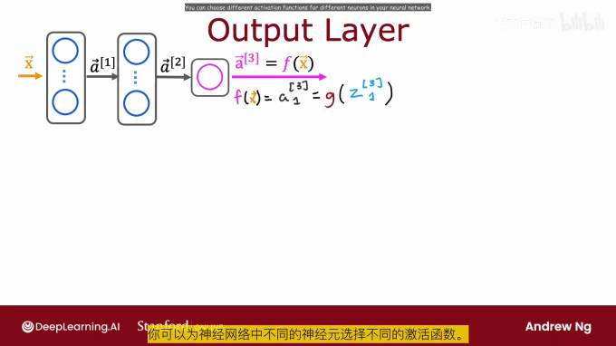
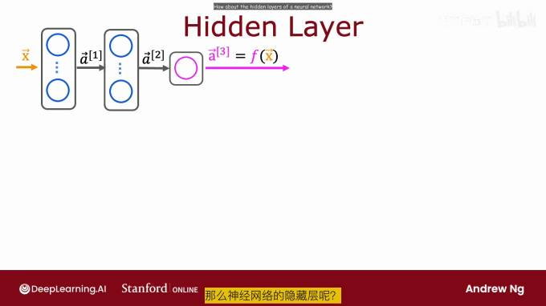
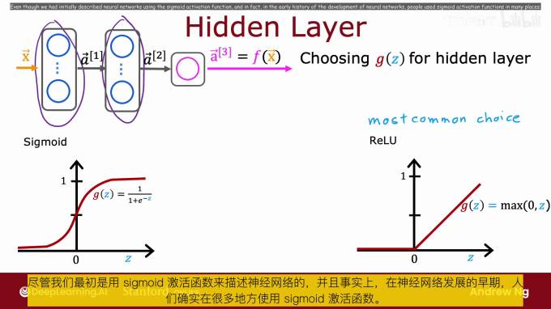
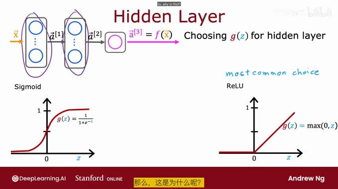
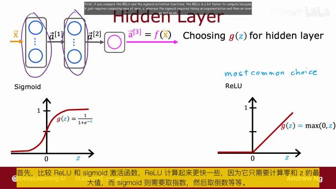
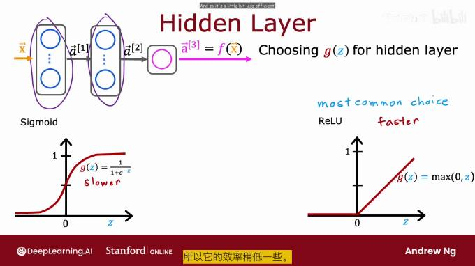
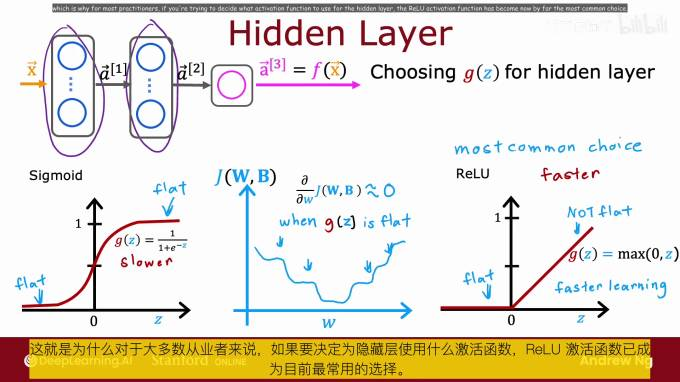
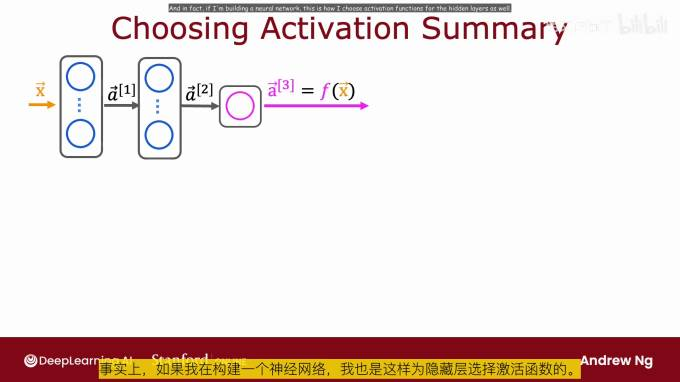
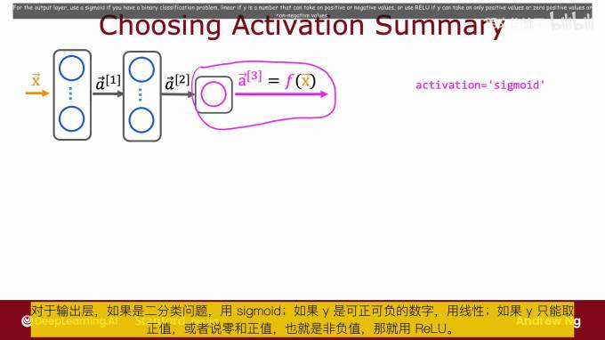
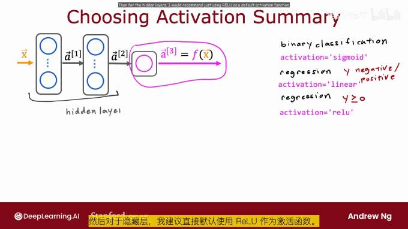

00:02我们来看看如何为神经网络中不同的神经元选择激活函数。
00:09我们先从为输出层选择激活函数的一些指导原则开始。
00:14根据目标标签或真实标签的不同，输出层的激活函数会有一个相当自然的选择。
00:26随后，我们也会看看神经网络隐藏层激活函数的选择。
00:34你可以为神经网络中不同的神经元选择不同的激活函数。

00:40在考虑输出层的激活函数时，通常取决于目标或真实标签是什么，会有一个相当自然的选择。
00:56如果你在做一个分类问题，其中 y 要么是零，要么是一，那么激活函数几乎总是最自然的选择，因为这样神经网络就能学会预测 y 等于一的概率，就像我们之前在逻辑回归中做的那样。
01:12因为这样神经网络就能学会预测 y 等于一的概率，就像我们之前在逻辑回归中做的那样。
01:21所以我建议，如果你在做二分类问题，就在输出层使用 sigmoid。
01:28或者，如果你在解决一个回归问题，那你可能会选择不同的激活函数。
01:35例如，如果你想预测明天股价相对于今天股价的变化，嗯，它可以涨也可以跌。
01:45所以在这种情况下，会是一个可正可负的数字。
01:50在这种情况下，我会推荐你使用线性激活函数。
01:57这是因为，那样的话你的神经网络输出 f (x)，也就是上面例子中的 a 三，将是 g 作用于 z。
02:07而使用线性激活函数，g(z）可以取正值或负值。
02:13所以 y 就可以是正或负。
02:20如果只能取非负值，比如你在预测房屋价格，那么最自然的选择就是 ReLU 激活函数，因为正如你在这里看到的，这个激活函数只取非负值，要么是零，要么是正值。
02:34因为正如你在这里看到的，这个激活函数只取非负值，要么是零，要么是正值。
02:41所以，在为输出层选择激活函数时，通常取决于你试图预测的标签是什么，就会有一个相当自然的选择。
02:53事实上，这张幻灯片上的指导原则，也几乎就是我一直以来为神经网络输出层选择激活函数的方式。
03:03那么神经网络的隐藏层呢！

03:07事实证明，ReLU 激活函数是目前许多从业者在训练神经网络时最常用的选择。
03:19尽管我们最初是用 sigmoid 激活函数来描述神经网络的，并且事实上，在神经网络发展的早期，人们确实在很多地方使用 sigmoid 激活函数。

03:34但这个领域已经发展到更频繁地使用 ReLU，几乎不再用 sigmoid，唯一的例外是，如果你有二元分类问题，确实会在输出层使用 sigmoid 激活函数。n。

03:51首先，比较 ReLU 和 sigmoid 激活函数，ReLU 计算起来更快一些，因为它只需要计算零和 z 的最大值，而 sigmoid 则需要取指数，然后取倒数等等。

04:08所以它的效率稍低一些。

04:10但第二个原因，也是更重要的一个原因，是 ReLU 函数只在图的这一部分，也就是左侧这里，变得平坦。
04:24而 sigmoid 激活函数，有两个地方会变得平坦。
04:28它在图的左侧变平，在图的右侧也变平。
04:36如果你使用梯度下降来训练神经网络，那么当函数在很多地方都很平坦时，梯度下降会非常缓慢。
04:48我知道梯度下降优化的是代价函数 J(W，B），而不是优化激活函数。
04:57但激活函数是计算过程的一部分。
05:01这会导致代价函数 J(W，B）中有更多平坦区域，梯度很小，从而减慢学习速度。
05:11我知道这只是一个直观的解释，但研究人员发现，使用 ReLU 激活函数也能让你的神经网络学习得更快些。
05:22这就是为什么对于大多数从业者来说，如果要决定为隐藏层使用什么激活函数，ReLU 激活函数已成为目前最常用的选择。

05:33事实上，如果我在构建一个神经网络，我也是这样为隐藏层选择激活函数的。

05:41总结一下，关于如何为神经网络选择激活函数，以下是我的建议。
05:49对于输出层，如果是二分类问题，用 sigmoid；如果 y 是可正可负的数字，用线性；如果 y 只能取正值，或者说零和正值，也就是非负值，那就用 ReLU。

06:07然后对于隐藏层，我建议直接默认使用 ReLU 作为激活函数。

06:15在 TensorFlow 中，你可以这样实现。
06:19不再像我们之前那样写等于 sigmoid，你可以为隐藏层，也就是第一隐藏层、第二隐藏层，让 TensorFlow 使用 ReLU 激活函数。
06:33然后对于输出层，在这个例子中，我让它使用了 sigmoid 激活函数。
06:41但如果你想改用线性激活函数，这是它的语法。
06:47或者你想使用 ReLU 激活函数，这里展示了它的语法。
06:53有了这组更丰富的激活函数，你将能够构建比仅使用 sigmoid 激活函数时更强大的神经网络。
07:05顺便一提，如果你看研究文献，有时会听到作者使用其他激活函数，比如激活函数，或者激活函数，或者激活函数。
07:21每隔几年，研究人员就会提出一些有趣的激活函数，有时它们的效果确实稍微好一点。
07:29例如，我在工作中用过几次 ReLU 激活函数，有时它比你在这个视频中学到的 ReLU 激活函数，效果稍好一些。
07:40但我认为，在大多数情况下，对于绝大多数应用来说，你在这个视频中学到的内容已经足够好了。
07:49当然，如果你想了解更多关于其他激活函数的信息，可以自行上网查阅。
07:56只是在少数情况下，这些其他的激活函数才可能更有效。
08:04说到这里，我希望你也能享受在这些可选实验和实践实验中练习这些想法和激活函数。
08:17我们到底为什么需要激活函数呢？
08:20为什么我们不直接到处使用线性激活函数，或者干脆不用激活函数？
08:26事实证明，这根本行不通。
08:30在下一个视频中，我们来看看为什么会这样，以及为什么激活函数对于让你的神经网络正常运作如此重要。